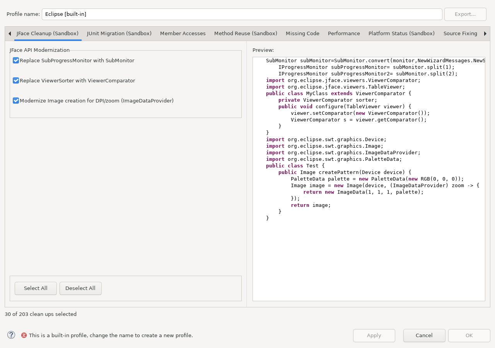

Migrates supported deprecated JFace API uses to current equivalents.
This documentation is installed by sandbox_jface_cleanup_feature
together with the runtime plug-in. The runtime plug-in does not depend on this Help bundle.
Open Java > Code Style > Clean Up, edit a cleanup profile, and select JFace Cleanup (Sandbox).

This configuration image uses the fixed example preview. To inspect actual project files, run the cleanup and continue to the real Cleanup execution preview.
Continue with Using this feature, Reviewing Cleanup changes, and Reference, safety, and limitations.